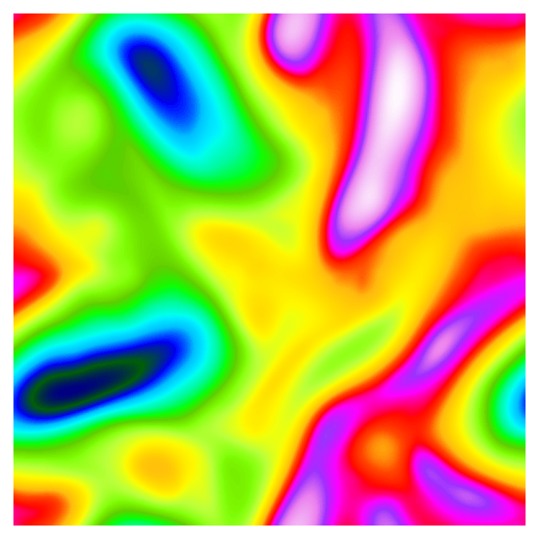

MOM6 on the GPU?
Marshall Ward
NOAA-GFDL
2024-08-28
Questions
- GPU vs CPU: What do we gain?
- How to produce GPU code from Fortran?
- MOM6 as a community model
Compute vs Memory

Where is MOM6?

More memory bound (like most models)
Peak performance
Nvidia GPUs
|
Intel CPUs
|
Peak GPU (Nvidia)
Peak computation:
| Arch | Year | SMs | Cores | FMA | Clock (GHz) | TFLOPs |
|---|---|---|---|---|---|---|
| V100 | 2017 | 80 | 32 | 2 | 1.37 | 7.0 |
| A100 | 2020 | 108 | 32 | 2 | 1.41 | 9.7 |
| H100 | 2022 | 114 | 64 | 2 | 1.755 | 25.6 |
(2x with Tensor cores)
Peak CPU (Intel)
| CPU | Year | Cores | AVX | FMAc | Clock | TFLOPs |
|---|---|---|---|---|---|---|
| 8274 | 2019 | 24 | 8 | 4 | 2.8 | 2.1 |
| 8368 | 2021 | 38 | 8 | 4 | 3.4 | 4.1 |
| 8592 | 2023 | 64 | 8 | 4 | 4.0 | 8.2 |
| 6780 | 2024 | 144 | 8 | 4 | 3.0 | 13.8 |
Peak Bandwidth
Nvidia GPUs
|
Intel CPUs
|
GPU speedup due to HBM memory (vs DDR)
What should we gain?
Ideally, we should expect 5-10x speedup. But performance is not the only reason to adopt GPUs:
- Economics: Costs of hardware and energy
- Availability: Industry embrace of ML on GPU
- Host/device design paradigm
Paths to GPU code
Red arrows show the Nvidia toolchain
Generating GPU bytecode
Any language can use device APIs, but most only support CUDA. Clang/Flang and GNU can target all device APIs. (Performance may differ!) Nvidia is a mostly closed ecosystem. OpenCL/HIP are LLVM-based. |
GPU API sprawl

Each of these nodes is sitting within its own sprawling ecosystem
Under the Hood
- CUDA: Nvidia proprietary language, API, and Runtime
- OpenCL: Open alternative for Intel, AMD, and Nvidia
- HIP: AMD-only alternative, part of AMD ROCm
- SYCL is a newer cross-platform alternative (very C++)
These can be rather low-level and often not easy to use. Probably unrealistic to expect scientists to write at this level.
Even deeper
Assembly-like IRs, with some cross-vendor support:
- PTX (Nvidia): generated by CUDA, OpenCL, GCC(?)
- SPIR (Intel): More general IR, compiled to either OpenCL driver or Vulkan...?
- HSAIL (AMD, ARM): generated from HIP, (...OpenCL?) via ROCm? GCC?
Although these are somewhat generic, for practical purposes they are associated with particular hardware.
Fortran Options
- OpenACC, OpenMP
-
Export loops to CUDA
- Transpile to/from Fortran
-
PSyclone, PACE, ...
- Hybrid programming
-
Fortran application, loops in CUDA cores
Others...?
Example OpenACC
Data transfers
!$acc enter data copyin(CS%G)
!$acc enter data copyin(CS%G%dxT, CS%G%dyT, ...)
...
!$acc enter data copyout(u, v)Loop execution
!$acc kernels present(G)
do k = 1,nz
do j=1,n ; do i=1,n
...
end do ; end do
do j=1,n ; do i=1,n
...
end do ; end do
enddo
!$acc end kernelsdo concurrent
Arbitrary-order loops:
do concurrent (i=1:m, j=1:n)
a(i,j) = b(i,j) * c(i,j) + d(i,j)
end doNot strictly parallel and subject to many internal constraints - but they can be offloaded to GPUs.
(OpenACC can annotate do concurrent and overcome some of
these limitations.)
OpenACC in MOM6
- Parallelization often needs
private() - Data transfer often needs to be explicit
(
copyin/out) - FMS inside loops:
- halo updates (
pass_var) - IO, diagnostics (
post_data) - Clocks (
cpu_clock_begin) - Error handling (
MOM_error)
- halo updates (
- 165k statements (250k lines) to analyze
Parallelization
Ignore MPI for GPU builds? Assume PE == 1?
Consider MPI across nodes, GPU on-node?
Component parallelization (e.g. global barotropic on GPU?)
Serious GPU runs need multiple cards.
How (if at all) do we integrate this into FMS parallelization?
Potential Targets
Performance has a long tail distribution
MOM6 GPU efforts
- Barotropic solver (NCAR)
- Vertical remapping workshop üòê
- BGC do-concurrent migration (Niki Zadeh, GFDL)
- Horizontal Viscosity (ongoing)
Also ML-based solvers:
- PyTorch interface (Cheng Zhang; not yet merged)
- SmartRedis interface (Andrew Shao)
MOM6 Consortium
What is the MOM6 Consortium?
Codebase is governed by a consortium of research groups. All changes to the "hub" must be tracked and preserved. Groups manage their own branch, and contribute to
|
Shared development
Many groups using diverse experiments and hardware ... but collaboration on a shared codebase. This is achieved through a commitment to reproducibility. |
Bit reproducibility
We model over an enormous range of length and time scales, with inherent turbulent cascades.
When to reproduce
- Since each node has its own hardware, compilers, and configurations, we cannot ever guarantee identical answers for everyone everyone.
- Development must still go on, but we cannot violate each node's bit reproducibility.
- We achieve this by self consistency! What does this mean?
Self Consistency
- Parallel Layout
-
All domain decompositions give the same result
- Restart/Pickup
-
One \(\Delta t\) run must equal two \(\tfrac{1}{2}\Delta t\) runs
- Dimensionality
-
Equations must be invariant to dimensional scaling
- Rotational invariance
-
Results must be invariant to an index rotation
Dimension Test
\[\begin{aligned} u^{n+1} &= u^{n} + \Delta t \times \mathcal{F} \\ \color{yellow}{2^{L-T}} u^{n+1} &= \color{yellow}{2^{L-T}} u^{n} + \color{yellow}{2^T} \Delta t \times \color{yellow}{2^{L - 2T}} \mathcal{F} \end{aligned}\]
If equations are dimensionally correct, then solutions should be invariant to scaling.
Rotation Test
Expressions should be invariant to rotation
|  |  |
FMA support
Enabling FMAs will change answers, e.g. \(a b + c d\). What is the order of operations?
Self-consistent FMAs are allowed, otherwise they are disabled (e.g. rotation) with parentheses
PFu(I,j,k) = & (pa(i,j) * h(i,j,k) + intz_dpa(i,j)) & - (pa(i+1,j) * h(i+1,j,k) + intz_dpa(i+1,j)) + ...FMA builds have their own (bitwise) answers
Can GPUs follow a similar pattern?
Future questions
- Continue with OpenACC? Or explore portability with OpenMP and
do concurrent? - How to restructure code to avoid FMS in loops?
- Efficient memory management without maintenance overhead?
- Can GPUs achieve any kind of self consistency? Or at least can support GPUs while retaining CPU self consistency?